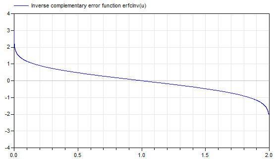

erfcInvInverse complementary error function: u = erfc(erfcInv(u)) |
|
Information
This information is part of the Modelica Standard Library maintained by the Modelica Association.
Syntax
Special.erfInv(u);
Description
This function computes the inverse of the complementary error function erfc(u) = 1 - erf(u) with a relative precision of about 1e-15. Therefore, u = erfc(erfcInv(u)) and erfcInv(u) = erfInv(1 - u). Input argument u must be in the range (otherwise an assertion is raised):
0 ≤ u ≤ 2
If u = 2, the function returns -Modelica.Constants.inf.
If u = 0, the function returns Modelica.Constants.inf
The implementation utilizes the formulation of the Boost library (erf_inv.hpp,
developed by John Maddock).
Plot of the function:

For more details, see Wikipedia.
Example
erfcInv(1) // = 0 erfcInv(0.5) // = 0.4769362762044699 erfInv(1.999999) // = -3.4589107372909473
See also
Syntax
Inputs (1)
| u |
Type: Real Description: Input argument |
|---|
Outputs (1)
| y |
Type: Real Description: erfcInv(u) |
|---|